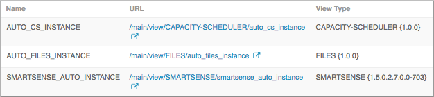
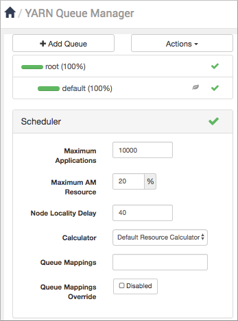
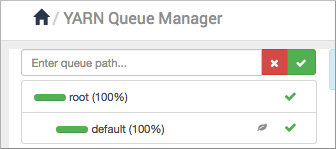

You can configure the capacity scheduler queues to scale a Hive batch job for your
environment. YARN uses the queues to allocate Hadoop cluster resources among users and
groups.
In this task, you create queues and set up a capacity scheduler to separate short- and
long-running queries into the queues:
hive1
This queue is used for short-duration queries and is assigned 50 percent of cluster
resources.
hive2
This queue is used for longer-duration queries and is assigned 50 percent of cluster
resources.
In Ambari, access the capacity scheduler:
Select YARN > Configs > Advanced, and in Filter enter
yarn.scheduler.capacity.root.
On the command line of the node where YARN is installed, go to the YARN
/conf file, and open the capacity-scheduler.xml
file.
Define the hive1 and hive2 queues, and set the
maximum capacity to 50 percent of the queue users with a hard limit.
The
default value of 1 for user-limit means that any single user in the queue can at a maximum
occupy 1X the queue's configured capacity. These settings prevent users in one queue from
monopolizing resources across all queues in a cluster.
From the Ambari dashboard, select ADMIN > Manage Ambari > Views.

Click the URL for the view named AUTO_CS_INSTANCE, which is the capacity scheduler
view.

In the YARN Queue Manager, click Add Queue.

Enter the queue path, which is the name of the first queue hive1, and then add the hive2 queue.
To create the following schedule, select the root queue and add
hive1 and hive2 at that level: